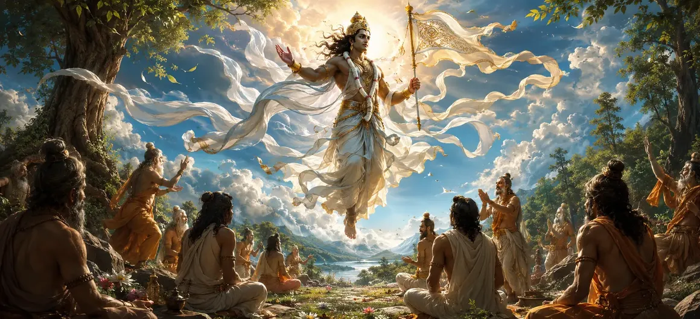

The Advent of Vayu
The fourth chapter of the Vayaviya Samhita narrates the momentous arrival of Lord Vayu to the Naimisha forest assembly.
As the celestial messenger and cosmic breath, Lord Vayu descends to fulfill the prayers of the sages and impart the supreme wisdom of Lord Shiva.
This chapter marks the transition from questioning and preparation to active divine instruction.
Chapter 4 Highlights
Celestial Descent
Describes the majestic arrival of Lord Vayu into the Naimisha sanctuary.
Reverent Welcome
Showcases the deep humility and honor extended by the sages to Vayu.
Cosmic Breath
Highlights Vayu's role as the life-force permeating the entire universe.
Preceptor Role
Establishes Lord Vayu as the primary narrator of the Vayaviya Samhita.
Divine Aura
Depicts the surge of uplifting spiritual energy accompanying his presence.
Gateway to Teachings
Opens the path for unfolding the core principles of Shaiva philosophy.
Core Topics in This Chapter
The Anticipation of the Divine Messenger
As the sages wait in deep meditation within the Naimisha forest, an intuitive awareness of an impending divine presence fills the air.
The collective yearning of the assembly creates a magnetic field that draws the celestial messenger toward them.
The Majestic Descent of Lord Vayu
Lord Vayu arrives carrying a gentle, fragrant breeze that instantly rejuvenates the forest and calms all restless minds.
His divine form radiates an illuminating splendor, signifying purity, swiftness, and supreme consciousness.
The Reverent Reception by the Sages
Overwhelmed with joy and reverence, the sages rise to greet Lord Vayu with folded hands and hymns of praise.
They offer proper seats and ritual worship, acknowledging him as the divine preceptor sent to enlighten them.
Vayu as the Cosmic Life-Force
The text elaborates on the cosmic stature of Lord Vayu, who sustains all living beings as the vital breath (Prana).
Because he moves unhindered across all realms, he is uniquely qualified to bridge the divine will of Shiva with human understanding.
Establishing the Role of the Preceptor
Lord Vayu graciously accepts the worship of the sages and prepares himself to deliver the sacred teachings entrusted to him.
This establishes a formal teacher-disciple dynamic that forms the backbone of the ensuing chapters.
Prelude to the Shaiva Teachings
With the preceptor seated and the assembly listening in rapt attention, the stage is perfectly set for expounding Shaiva principles.
The chapter concludes by setting the tone for the profound philosophical discourses that follow.
Transition to Chapter 5
With Lord Vayu established as the speaker, the narrative transitions smoothly into Chapter 5, 'Principles of the Shaiva Teaching — Part 1'.
Chapter 5 begins the systematic exposition of foundational Shaiva doctrines and metaphysical truths.
Key Teachings of Chapter 4
Divine Responsiveness
Sincere and collective spiritual yearning never fails to draw divine grace.
Honor to Teachers
True wisdom is received only through utmost humility and reverence for the preceptor.
Prana and Wisdom
The vital breath sustains life, while spiritual wisdom liberates the soul.
Lineage of Lore
Ensures the unbroken transmission of sacred knowledge from Shiva to humanity.
Purifying Presence
An enlightened teacher dispels ignorance just as fresh wind clears the sky.
Gateway to Part 1
Prepares the reader for the detailed philosophical tenets in Chapter 5.
Spiritual Reflection
The advent of Lord Vayu reminds us that when our hearts are pure and our inquiry is sincere, divine guidance manifests in our lives. A true teacher acts as the breath of fresh air that awakens dormant spiritual awareness.
Living the Message of Chapter 4
Approach spiritual teachings and mentors with deep respect, openness, and readiness to learn.
Cultivate your inner breath (Prana) through mindful practices to maintain clarity of body and mind.
Recognize that divine grace always responds to collective and individual devotion.
Key Spiritual Concepts
The majestic and celebratory arrival of Lord Vayu.
The powerful influence of the celestial messenger.
The sacred meeting between the preceptor and disciples.
The infusion of vital energy and spiritual breath.
The formal transmission of Shaiva wisdom.
The supreme humility and devotion toward the spiritual teacher.
Chapter Summary
Vayaviya Samhita Chapter 4 presents The Advent of Vayu. Detailing the majestic arrival of Lord Vayu to the Naimisha forest assembly, his reverent reception by the sages, and his establishment as the preceptor of Shaiva lore, this chapter sets the stage for active instruction. It serves as the direct prelude to Chapter 5, 'Principles of the Shaiva Teaching — Part 1', continuing the sacred exploration of the Shiva Purana.
Frequently Asked Questions
1. What is the main theme of Vayaviya Samhita Chapter 4?
Chapter 4 centers on the majestic arrival of Lord Vayu (the wind deity) to the Naimisha forest assembly to transmit the sacred teachings of Lord Shiva.
2. Why is Lord Vayu chosen as the transmitter of these teachings?
Lord Vayu permeates all of creation and serves as the divine messenger capable of carrying the pure breath of sacred lore to the waiting sages.
3. How do the sages react to the arrival of Lord Vayu?
The sages welcome Lord Vayu with utmost reverence, humility, and joyous anticipation, recognizing him as an enlightened preceptor.
4. What role does Lord Vayu play in the structure of the Vayaviya Samhita?
He acts as the principal narrator who unfolds the metaphysical principles and devotional practices of Shaivism to the assembly.
5. What atmosphere accompanies the advent of Lord Vayu?
His advent is accompanied by a divine breeze, a surge of spiritual energy, and profound reverence across the forest sanctuary.
6. What is the next chapter for navigation after Chapter 4?
The next chapter for navigation is Chapter 5, titled 'Principles of the Shaiva Teaching — Part 1'.
“When the divine breath of wisdom descends through a true preceptor, the forest of human ignorance is swept away by the winds of realization.”
Continue Through Vayaviya Samhita
Chapter 4 details The Advent of Vayu. Continue to Chapter 5, Principles of the Shaiva Teaching — Part 1.